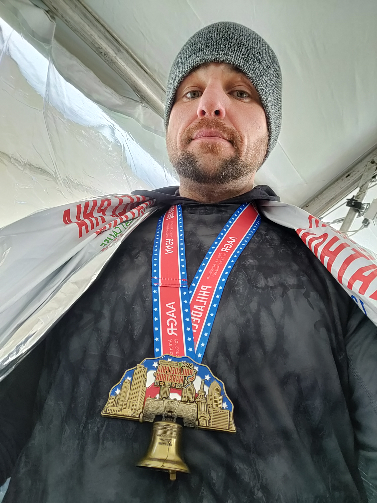
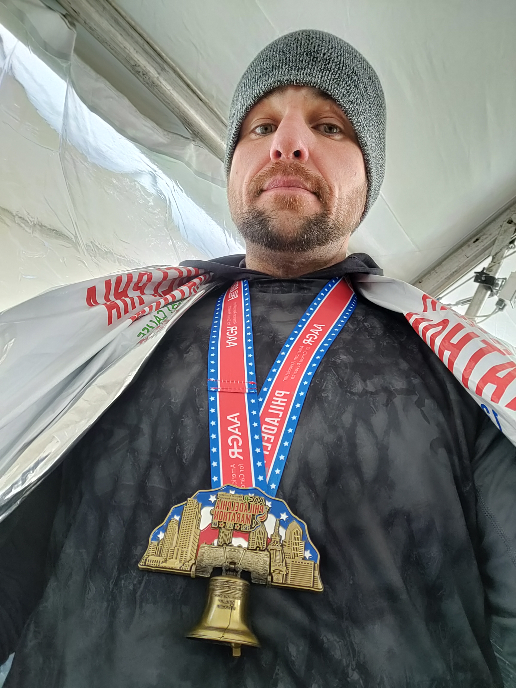

Whose Drive is Matched by Few
Distance runners are wired differently. You want someone on your team that isn't capable of quitting.
Courage
To take on the toughest assignments.
Experience
Click the Images to View The Work in My Portfolio


Distance runners are wired differently. You want someone on your team that isn't capable of quitting.
To take on the toughest assignments.
Click the Images to View The Work in My Portfolio